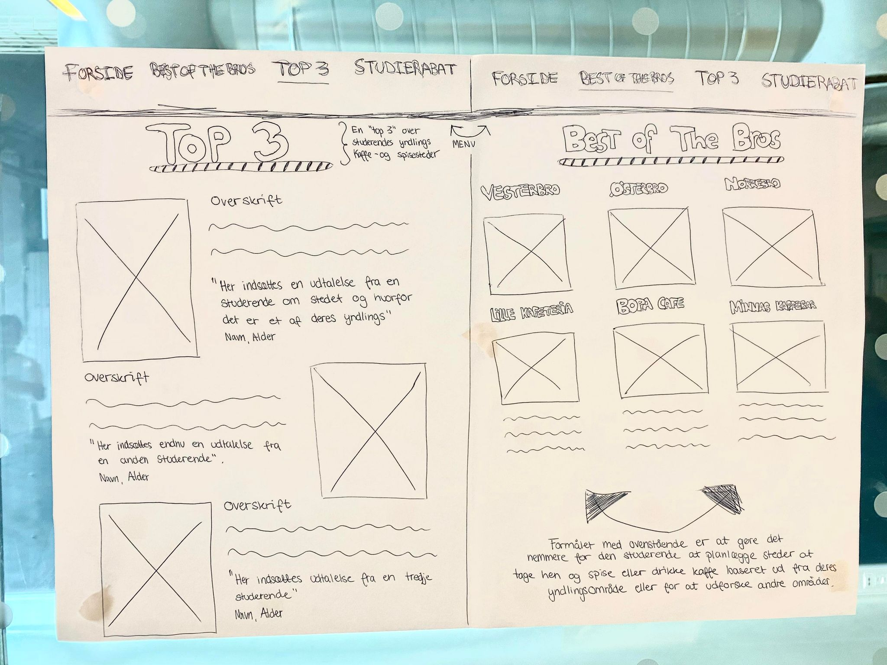
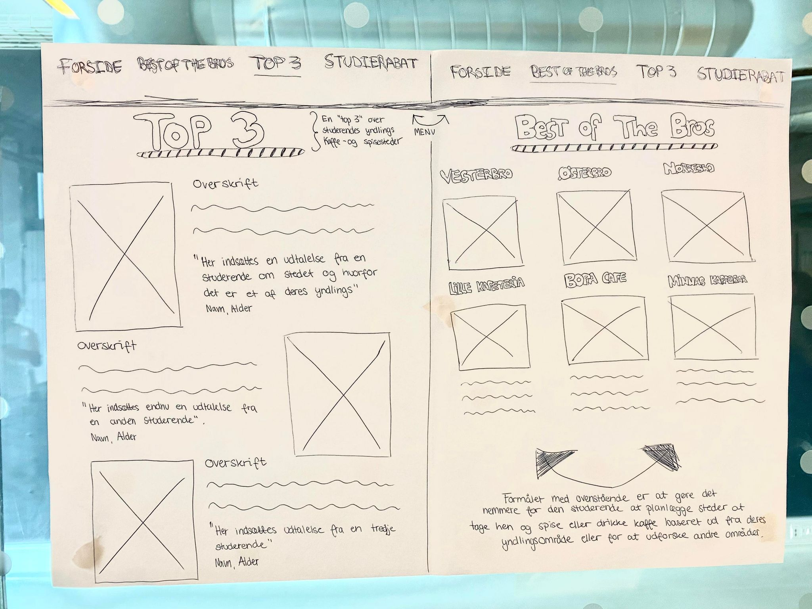

Tema 3 - UX/UI
Temabeskrivelse
Dette tema har givet en grundlæggende forståelse for samspilet mellem brugere og brugergrænseflader, samt hvilke teorier, værktøjer og medtoder man har kunne benytte til research, design og test i en digital pdouktudvikling. Temaet har givet os erfaring med udvalgte UX-metoder samt hvordan man præsenterer et produkt og formidler research-og testresultater. Vi skulle først og fremmest udvikle vores eget website ud fra egen idé om et koncept. Udfra sin idé skulle man lave forskellige former for research inkl. et interview og observationsopgave, lave inspirationssøgning og til sidst snævre det ind til grafiske analyser såsom sketching,storyboards, moodboards, style-tile og wireframes til digital-prototype. I denne forbindelse blev vi introduceret til Figma, hvori vi har kunne samle vores indsigter og derudfra udvikle vores designproces.
Hvad har jeg tilegnet mig?
Afleveringer
Proces - Sparegrisen
Research
Solution Sketch
 
